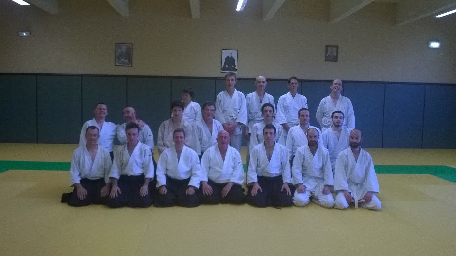

Bienvenue sur le site de l'Aïkido-club de Vernon
Vous y découvrirez de nombreuses informations régulièrement mises à jour.
Actualités
Stage avec Bruno Cassard, 5° dan.
Le dimanche 10 juin
Bruno nous rend visite comme l'année passée, et animera un stage au dojo de Gamilly (Vernon) de 10h00 à 12h30. Venez nombreux !
Echange avec le dojo de Evreux
Le jeudi 8 février aura lieu au dojo du Grévarin (Vernon) le premier interclub de l'année avec le club d'Aïkido de Evreux. Exceptionellement les cours commenceront à 19h15 et se termineront à 21h15 avec un pot de l'amitié.
Nous pouvons d'ores et déjà annoncer que cet interclub ne sera pas le dernier de l'année !
Echange avec le dojo de Ivry la Bataille
Le mardi 3 avril aura lieu au dojo de Ivry la Bataille notre traditionnel interclub nos petits camarades. Exceptionellement les cours commenceront à 19h30 et se termineront à 21h30.
Cours Aikido jeunes : Opération portes ouvertes
Le 9 novembre, le club d'Aïkido de Vernon organise un cours portes ouvertes. Le professeur sera présent de 18h00 à 19h15, pour permettre aux plus jeunes (de 10 à 13 ans), de découvrir et s'initier à notre art martial.
Le cours sera gratuit,et sans engagement, et sera assuré par notre professeur M. Delestre, titulaire du brevet fédéral d'enseignant.
Les personnes intéressées n'auront besoin d'apporter qu'un vêtement de sport. Venez nombreux !C'est la rentrée !
Les cours adulte ont repris le 5 septembre. Ils ont lieu les mardis et les jeudis à 19h30.
Les cours enfants vont reprendre le 14 septembre. Ils auront lieu le jeudi à 18h00.
Une permanence est assurée pour les nouveaux venus ; n'hésitez pas à venir nous voir et échanger avec nous !
Vous pouvez dès maintenant vous présenter pour un cours d'essai. Vous n'aurez besoin que d'une simple tenue de sport pour commencer !
Nous serons également présent au forum des associations de Vernon, qui a lieu Dimanche 10 septembre au parc des tourelles. Ne ratez pas notre démonstration, programmée à 14h30.
ASSEMBLEE GENERALE
Le 29 juin 2017 à 21h00Au Dojo de Gamilly
Rue R. Schumann
27200 Vernon
(L’assemblée se déroulera à la fin du cours)
Photos : le stage de Bruno Cassard du 18 juin
Philippe obtient son premier dan !
Félicitations à Philippe Clément, notre cher président, qui a obtenu ce 4 juin 2017 son premier dan.
- 5 septembre 2017 : reprise des cours adulte
- 10 septembre 2017 : démonstration et permanence au forum des associations de Vernon
- 14 septembre 2017 : reprise des cours enfant (Cours assuré à 18h00 le jeudi)
{kind=link}
{kind=link}